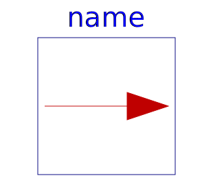

This block implements the Modelica.SIunits.Conversions functions as a fixed causality block to simplify their use. The block contains a replaceable block class ConversionBlock that can be changed to be any of the blocks defined in Modelica.Blocks.Math.UnitConversions, and more generally, any blocks that extend from Modelica.Blocks.Interfaces.PartialConversionBlock.
The desired conversion can be selected in the parameter menu (the selected units are then displayed in the icon):

| Name | Description |
|---|---|
|  ConversionBlock | Conversion block |